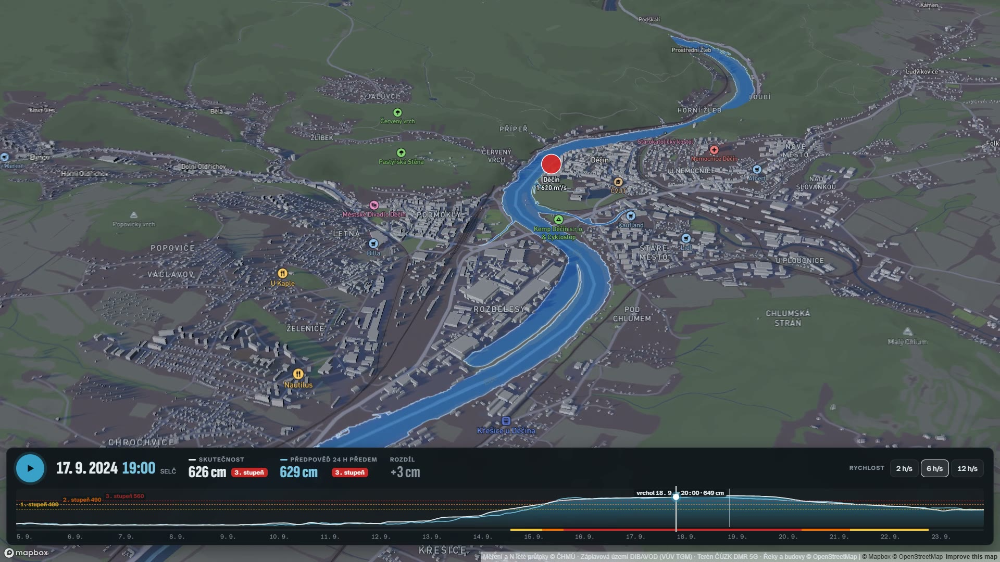
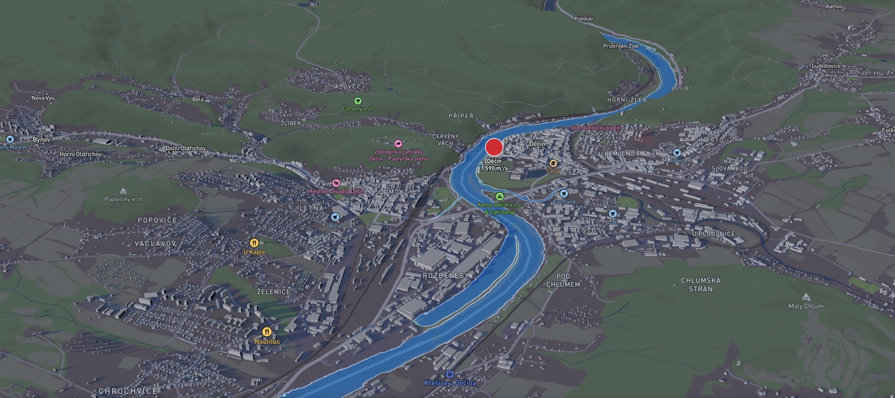
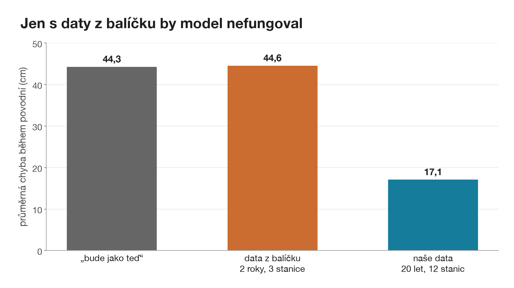
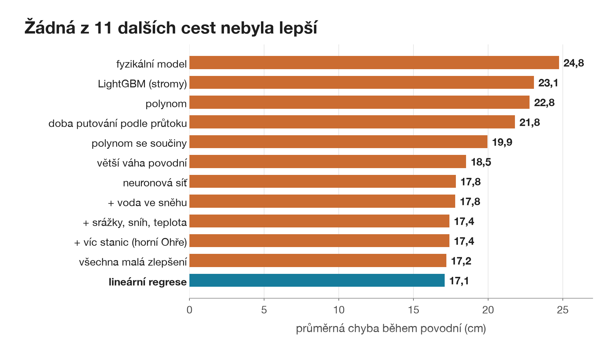
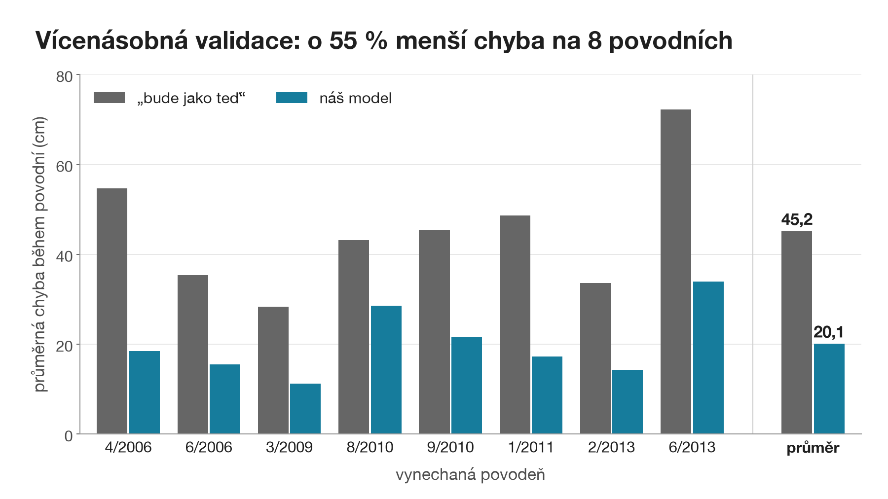
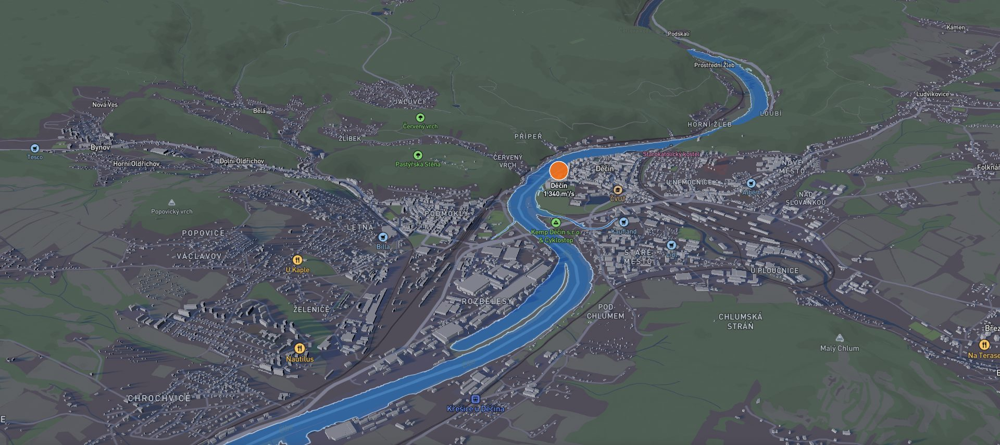

Tohle je Děčín v září 2024.
Náš model to hlásil 27 hodin předem.
Video: Mapbox, OpenStreetMap, terén ČÚZK DMR 5G · měření ČHMÚ

Den předem víte, kam až voda dosáhne
27h
3. stupeň v Děčíně hlášen 27 hodin předem · Boris, září 2024
- Povodňová komise
- Hasiči
- Lidé u řeky
Hladina v Děčíně a Ústí za 12, 24 a 36 h, varování před 2. a 3. stupněm, rozliv v mapě. Den navíc znamená odvézt auta, postavit pytle a vyklidit sklepy.
Mapa: Mapbox, OpenStreetMap, terén ČÚZK DMR 5G, záplavová území DIBAVOD · měření ČHMÚ
Co teče Prahou teď, je zítra v Děčíně.
- 20let, 2006–2025
- 12stanic
- 175 320hodin měření
Jen s daty z balíčku by model nefungoval

Stejný zdroj jako balíček, jen 20 let a 12 stanic místo 2 let a 3 stanic · řeky OpenStreetMap
Předpověď je součet: kolik centimetrů přidá každá řeka
98 vstupů: hladina a průtok teď a za posledních 36 h, jen to, co je změřené. Lineární regrese je vážený součet.
Vydáno 14. 9. 2024 11:00 na 15. 9. 11:00
198cm
- průměrná hladina198
- Děčín a Ústí+80
- Vltava+89
- horní Labe+116
- Mělník+96
- Ohře−2
Model varoval. Skutečnost 551 cm, 3. stupeň přišel o 3 h později.
Boris 9/2024, testovací část · Děčín, předpověď 24 h dopředu · model učený do roku 2020
Žádná z 11 dalších cest nebyla lepší

3 další modely
neuronová síť, LightGBM, fyzikální model
8 úprav přímky
srážky, sníh a teplota, voda ve sněhu, víc stanic, polynom, součiny, větší váha povodní, doba putování podle průtoku, všechno dohromady
Proč přímka
Voda v Děčíně je součet Vltavy, Labe a Ohře posunutých o dobu putování. Velké povodně jsou v datech jen dvě, na složitý model je to málo.
Validace: 4 povodně 2006–2011, průměr Děčína a Ústí na 12, 24 a 36 h
Ověřujeme třikrát, pokaždé na povodních, které model neviděl

- Výběr modelu4 vynechané povodně
- Vícenásobná validacekaždou z 8 povodní 2006–2020 jednou vynecháme
- Test 2021–2025jednou, na konci, na finální model
Dělení v čase, nikdy náhodně.
Dvě pasti z budoucnosti
Našli jsme je a vyřadili: doplňování děr v datech a denní srážky.
Data ČHMÚ 2006–2025
Boris: 3. stupeň hlášen 27 hodin předem

27h
před 3. stupněm v Děčíně
Předpověď vydaná den předem jde se skutečností. „Bude jako teď“ je vždycky o den pozadu.
Vrchol 649 cm předpověděl na 611 cm.
Model tuhle povodeň nikdy neviděl.
Testovací část 2021–2025, model učený do roku 2020 · 1. stupeň 400, 2. stupeň 490, 3. stupeň 560 cm
O 55 % menší chyba na testu i na všech 8 povodních
−55%


Dvakrát stejné číslo. Není to náhoda.
Průměrná chyba hladiny během povodní, Děčín a Ústí, 12, 24 a 36 h dopředu

Živé demo
Když se zasekne: video ze slajdu 1 a jet dál · v mapě patří klávesy mapě, zpět tlačítkem Zavřít · Mapa: Mapbox, OpenStreetMap, ČÚZK
Co umíme, co ne a co dál
Hladinu v Děčíně a Ústí na 12, 24 a 36 h. Třetí stupeň den předem. Rozliv v mapě po hodinách.
Na 36 h je chyba dvakrát větší: voda, která přijde, ještě neteče žádnou stanicí. Vrchol vyšší než kdy v tréninku podhodnotíme.
Na 12 až 36 h nepomáhají, voda už je v řekách. S oficiální předpovědí ČHMÚ se srovnat neumíme.
Předpověď srážek pro 2 až 3 dny dopředu. Dvoustupňové varování: dřív a jistěji.
Z otevřených dat zdarma: o povodni v Děčíně den předem, s modelem, který se vejde na jeden obrázek.
Proč jen lineární regrese?

Na povodních, které model neviděl, vyšla nejlíp. Nemá se na čem přeučit a každou váhu vysvětlíme fyzikálně.
Záložní slajd · validace, 4 povodně 2006–2011
Co znamená „bude jako teď“?

Předpověď, že hladina za 24 h bude stejná jako teď. Nejjednodušší srovnání, při povodni je vždycky o den pozadu.
Záložní slajd
Proč ne srážky?

I s dokonalou předpovědí deště na 3 dny klesla chyba jen o 1 cm. Déšť, který spadne teď, doteče do Děčína až za víc než 36 h.
Záložní slajd
Jak moc se pletete?

Do rozmezí od–do se vejde 8 až 9 z 10 hodnot. Rozmezí počítáme z chyb na vynechaných povodních.
Záložní slajd
Funguje to i na jiné povodni?

Leden 2011, validační povodeň: 3. stupeň hlášen 15 hodin předem.
Záložní slajd · validace
Podle čeho model rozhoduje?

Každé políčko je váha jednoho vstupu. Děčín teď +88 cm, Praha teď +49 cm. Oranžová vedle modré: model odečítá starší hodnotu od nové, počítá, jestli voda stoupá.
Záložní slajd · 98 vah: hladina v Děčíně a Ústí × 7 zpoždění 0 až 24 h, průtok 12 stanic × 7 zpoždění 0 až 36 h

Je rozliv hydraulický model? Není.
Výška terénu (ČÚZK DMR 5G, po 10 cm) proti výšce hladiny, ověřená proti úřední mapě záplavových území.
- 167 hanáš rozliv při pětileté vodě
- 183 haúřední mapa (DIBAVOD)
- 165 haprůnik, shoda 0,89
Záložní slajd · Mapa: Mapbox, OpenStreetMap, ČÚZK, DIBAVOD